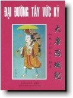

|
BuddhaSasana Home Page |
Vietnamese, with Unicode Times font |
|  |
Đại Đường Tây Vức Ký Pháp sư Huyền Trang |
Đại Chánh Tân Tu, Đại Tạng Kinh quyển thứ 51, thuộc Sử Truyện bộ thứ 3, từ trang 867 đến trang 948, gồm 12 quyển, thứ tự kinh văn số 2087, do Ngài Huyền Trang đời nhà Đường dịch, Ngài Biện Cơ soạn lại. -ooOoo-
Lời tựa Q uý vị đang cầm trên tay quyển "Đại Đường Tây Vức Ký" được chuyển dịch từ chữ Hán sang tiếng Việt là do kết quả của sự miệt mài dịch thuật của chúng tôi từ ngày 24 tháng 10 năm 2003 đến ngày 10 tháng 12 năm 2003 tại Tu Viện Đa Bảo, Úc Đại Lợi nhân mùa nhập thất lần đầu tại đây.Xin tạ ơn Tam Bảo đã chiếu soi cho chúng con để lần dò từng câu văn, từng ý chữ mà Ngài Huyền Trang, một bậc danh tăng đời Đường đã thể hiện trọn vẹn hết tâm ý khi đi chiêm bái, học hỏi và ghi lại nơi Thánh Địa ròng rã trong 17 năm trời. Để rồi về lại kinh đô Tràng An với 657 bộ kinh bằng chữ Phạn. Ngài trải qua 110 nước và về sau cùng 100 vị Cao Tăng Học giả đương thời, dưới quyền chủ tọa của Ngài, phiên dịch suốt trong vòng 19 năm, kể từ khi Ngài về lại Tràng An Trung Quốc, vào ngày 24 tháng giêng năm 645 (năm Trinh Quán thứ 19 đời nhà Đường). Ngài lên đường ra đi khỏi Trung Quốc vào năm Trinh Quán thứ 3 đời nhà Đường tức năm 628, lúc ấy Ngài đã 33 tuổi. Như vậy Ngài sinh vào năm 595 và Ngài thị tịch vào ngày mồng 5 tháng 2 năm 664, tại Ngọc Hoa Cung, hưởng thọ 69 tuổi. Ngài về lại Kinh Đô đúng 50 tuổi và chủ trì phiên dịch trong 19 năm ròng rã như thế và ngày nay Ngài đã để lại cho hậu thế một gia tài Pháp Bảo vô giá mà đông tây kim cổ khó có người thứ hai sánh kịp. Đây là một tập sách gồm 12 quyển và hai lời tựa được đăng trong Đại Chánh Tân Tu Đại Tạng Kinh, quyển thứ 51 thuộc Sử Truyện, bộ thứ 3 từ trang 867 đến trang 948, theo thứ tự kinh văn số 2087. Chỉ có 81 trang kinh mà chúng tôi phải dịch ròng rã gần 2 tháng dài. Mỗi ngày từ 5 đến 6 tiếng đồng hồ và kết quả là hơn 460 trang sách khổ A5 và gồm 127.264 chữ, như quý vị đang đọc. Đại Tạng Kinh không chỉ có một quyển mà cả một trăm quyển như thế. Mỗi quyển dày từ 1000 đến 2000 trang. Nếu một người để cả một đời ra đọc chưa chắc gì đã hết, đừng nói đến vấn đề phiên dịch. Bây giờ Phật Giáo Việt Nam đã bắt đầu cho phiên dịch nhiều phần từ Kinh, Luật, Luận trong Đại Tạng Kinh ra tiếng Việt. Trong đó phải nói rằng về phần Kinh Văn, Hòa Thượng Thích Trí Tịnh, Cố Đại Lão Hòa Thượng Thích Trí Nghiêm, Cố Hòa Thượng Thích Thiện Siêu, Cố Hòa Thượng Thích Huệ Hưng đã đóng góp dịch thuật phần chính. Về Luật Tạng có Cố Hòa Thượng Thích Hành Trụ, Cố Hòa Thượng Thích Thiện Hòa, Cố Hòa Thượng Thích Trí Thủ, Cố Hòa Thượng Thích Trí Minh, Hòa Thượng Thích Đổng Minh v.v...Về Luận Tạng có Cố Hòa Thượng Thích Khánh Anh, Cố Hòa Thượng Thích Thiện Hoa, Cố Hòa Thượng Thích Trí Thủ, Cố Hòa Thượng Thích Thiện Siêu, Cố Hòa Thượng Thích Thanh Kiểm, Cố Hòa Thượng Thích Trung Quán, Cố Hòa Thượng Thích Đức Niệm, Cố Thượng Tọa Thích Viên Đức, Cố Sư Bà Thích Nữ Như Thanh, Cố Sư Bà Thích Nữ Diệu Không v.v... đã đóng góp phần mình không nhỏ cho vấn đề phiên dịch từng loại như thế. Riêng phần Kinh Tạng Pali do Hòa Thượng Thích Minh Châu đã dịch gần xong tất cả Kinh Văn. Phần Luật và Luận do Chư Tôn Đức Trưởng Lão thuộc Phật Giáo Nguyên Thủy phiên dịch. Hòa Thượng Thích Tịnh Hạnh người chủ trương một Đại Tạng Kinh Việt Nam đã đang và sẽ cho Tăng Ni phiên dịch những phần còn lại, rồi san định trước sau để hình thành. Hiện nay Hòa Thượng đã cho xuất bản được 10 bộ. Một bộ Đại Tạng Kinh Việt Nam được hình thành trọn vẹn, chắc phải 200 bộ như thế, mỗi bộ dày chừng 1000 đến 2000 trang. Riêng bộ "Đại Đường Tây Vức Ký" nầy sở dĩ chúng tôi dịch trước vì nghĩ rằng chính đây là tấm bản đồ đầy đủ nhất, chi ly nhất mà đương thời từ năm 628 đến năm 645 tại Ấn Độ và Trung Hoa chưa có một người nào viết được một bộ Sử Phật Giáo như thế. Đây là kết quả của 17 năm trường mà Ngài Huyền Trang đã ở tại Ấn Độ. Đi đến đâu Ngài cũng ghi lại từ khí hậu, phong thổ cho đến tập quán và nhất là những câu chuyện liên quan đến cuộc đời đức Phật cũng như chư vị Bồ Tát, A La Hán. Số nước mà Ngài đã đi qua là 110, ngày nay chúng ta có thể gọi là những tiểu bang, vì ngày xưa mỗi một vùng có một ông Vua nhỏ, hoặc tù trưởng đứng đầu. Còn ngày nay, Ấn Độ chỉ còn một nước mà thôi. Chung quanh đó có một số nước, ngoài Ấn Độ như Ba Tư, Kasmir, Tân Cương v.v... là những nước lớn ta có thể kể riêng. nhưng tựu chung chỉ đi bộ và dùng voi ngựa mà vượt qua được những chặng đường dài gần 50 ngàn dặm ấy thì quả thật thế gian nầy chỉ có một không hai. Nhờ bản đồ hành hương của Ngài qua truyện Đại Đường Tây Vức Ký nầy mà những nhà Học giả, những nhà Khảo Cổ Học người Âu Châu mới tìm đến Ấn Độ để xác nhận, tìm kiếm những di tích ấy vào cuối thế kỷ thứ 18 và cho đến nay thì bốn Thánh Địa căn bản của đức Phật từ khi Đản Sinh cho đến khi Thành Đạo, Thuyết Pháp lần đầu tiên và thị tịch Đại Bát Niết Bàn đã rõ ràng. Bây giờ các nhà Khảo Cổ Học người Nhật Bản vẫn còn đang tiếp tục tìm kiếm các di tích cũ ngày xưa cách đây 2547 năm về trước. Tất cả đều nhờ vào công đức của Ngài Huyền Trang đã vẽ cho chúng ta một tấm bản đồ cách đây 1375 năm (2003-628, là năm mà Ngài Huyền Trang 33 tuổi bắt đầu sang Ấn Độ); đây là một tấm bản đồ cũ nhất trong tất cả những tấm bản đồ của thế giới hiện nay. Đại Đường Tây Vức Ký nầy đã được dịch sang tiếng Anh, tiếng Đức, tiếng Nga; và tiếng Việt hình như đây là bản đầu tiên. Vì cho đến nay, chúng tôi vẫn chưa đọc được một bản nào mô tả tỉ mĩ như thế. Gần đây chúng tôi có đọc được quyển "Đường Tam Tạng Thỉnh Kinh" của nhà văn Võ Đình Cường tái bản lần thứ 3 năm 2000 thì mới biết ngày 7 tháng 5 năm 1960, ông đã cho xuất bản cuốn "Huyền Trang", nhưng lúc ấy tại quê nhà tôi chưa có cơ duyên đọc đến. Căn cứ theo lời tựa lần thứ nhất xuất bản vào năm 1960, được biết rằng nhà văn Võ Đình Cường dùng tài liệu của Học giả Lương Khải Siêu người Trung Hoa soạn và nhờ Cố Hòa Thượng Thích Thiện Siêu, Cố Hòa Thượng Thích Trí Thủ dịch tài liệu ấy ra tiếng Việt; nhưng phần mình, nhà văn không cho biết ông đã căn cứ vào tài liệu nào để viết. Dĩ nhiên phải có tài liệu chính trong tay, ông mới hoàn thành tác phẩm ấy được. Vì đây là một nhân vật lịch sử chứ không phải Dã sử hoặc Huyền sử, cho nên chúng ta phải làm sáng danh điều nầy. Nhân nghiên cứu để viết lời tựa cho quyển sách quan trọng nầy, chúng tôi mới thấy bài dịch của lời tựa Vua Đường Thái Tông đã viết vào năm 648 gồm 780 chữ mà Ngài Trí Thủ và Ngài Thiện Siêu đã dịch ra tiếng Việt thật tuyệt vời. Nay chúng tôi xin trích đăng lại cho đủ ba lời tựa cho phần đầu của dịch phẩm nầy. Trong chương 5, phần XVI về việc phiên dịch Kinh Điển, nhà văn Võ Đình Cường viết như sau: "Mùa thu năm sau, phụng mệnh Vua Thái Tông, Ngài thuật cho một đệ tử là Biện Cơ chép lại cuộc Tây Du của Ngài trong 17 năm trải qua 138 nước một cách tường tận..." Ở đây có thể phân tích một vài việc như sau: Có một điều chúng tôi thắc mắc là: "Ngài Tam Tạng Pháp Sư Huyền Trang phụng chiếu dịch" quyển nầy. Tại sao Ngài phải dịch? Lẽ ra phải nói là Ngài soạn mới đúng. Khi viết lại chắc Ngài phải viết bằng chữ Hán, nghĩa là đi đến đâu ngài chép đến đó. Chứ sau 17 năm về lại Trung Quốc làm sao nhớ hết mà kể lại cho ngài Biện Cơ soạn lại? Và một điều khó hiểu nữa - Không lẽ Ngài viết bằng chữ Phạn? - Chắc chắn là không. Vì tiếng mẹ đẻ của Ngài là tiếng Trung Hoa, khi qua đó Ngài đã 33 tuổi, trong khi tiếng Phạn chưa giỏi thì phải lấy tiếng mẹ đẻ làm chuẩn vậy. Thứ nữa ở trong Đại Tạng Kinh, Phần tựa thứ nhất cho biết Ngài đã đi 110 nước; trong khi đó ông Võ Đình Cường bảo đi đến 138 nước; và ngay cả trong lời tựa thứ 2 trong Đại Đường Tây Vức Ký của Thượng Thơ Tả Bộc Xạ Yến Quốc Công Trương Thuyết có ghi là: Lời tựa của Tam Tạng Thánh Giáo do Vua Đường Thái Tông viết chỉ có 780 chữ" mà ông Võ đã viết là 781 chữ. Điều đó cũng dễ hiểu thôi vì ông cũng có nhận định rằng: "Ông Lương Khải Siêu bảo rằng Ngài Huyền Trang sang Ấn Độ năm Trinh Quán nguyên niên là sai" và ông đã chứng minh là năm Trinh Quán thứ ba mới đúng. Điều chứng minh nầy của ông Võ đúng với Đại Tạng Kinh. Đại Chánh Tân Tu Đại Tạng Kinh (Taisho Shinshu Daijokyo) là Đại Tạng Kinh được hoàn thành dưới thời Vua Đại Chánh (Taisho). Vua nầy là con của Vua Minh Trị Thiên Hoàng (Meiji Tenno). Vua Minh Trị đã có công duy tân đất nước Nhật vào năm 1868 cách đây 135 năm (2003-1868) và sau khi Minh Trị Thiên Hoàng băng hà, Vua Đại Chánh lên ngôi. Ông Vua nầy trị vì không lâu; nhưng được một việc dưới thời ông Tam Tạng Kinh Điển bằng chữ Hán đã được sưu tập chỉnh lý và đóng lại thành bộ, để ngày hôm nay tại Trung Hoa, Đại Hàn, Việt Nam, Mỹ Quốc, có cơ hội căn cứ vào đó mà dịch thuật nghiên cứu. Vào thời ấy, năm 1923 đến năm 1933 ( Đại Chánh năm 13 đến năm Chiêu Hòa thứ 7), Vua cho triệu tập 100 Học giả Tăng Sĩ và Cư Sĩ toàn là những vị đỗ Tiến Sĩ có trình độ Phật học thâm sâu kết thành bộ Đại Tạng Kinh nầy. Chúng ta biết rằng bản Đại Đường Tây Vức Ký nầy y cứ vào bản Đại Đường Tây Vức Ký của Kinh Đô Đế Quốc Đại Học (Kyoto Teikoku Daigakku) soạn ở trang 867 quyển 51. Như vậy đây là một tài liệu đáng tin cậy. Vì lẽ tài liệu từ Đại Học soạn dịch và dạy cho sinh viên ở Nhật phải nói là hoàn chỉnh hơn những tài liệu khác. Dĩ nhiên không phải là hoàn toàn đúng hết; nhưng tài liệu ấy ta có thể y cứ được. Đại Đường Tây Vức Ký được soạn từ năm 646, như vậy cách nay đã 1357 năm (2003-646) mà văn thời đó là cổ văn và dĩ nhiên những triều Tống, Nguyên, Minh, Thanh đều có sửa đổi lại cho hợp với câu văn của thời đại, để người sau đọc dễ hiểu hơn. Rồi đến thời Đại Chánh của Nhật Bản, tức hơn 1200 năm về sau, Đại Tạng Kinh nầy mới được hình thành tại Nhật và dĩ nhiên là đã được những học giả Nhật Bản san định lại một lần nữa theo sự hiểu biết của người Nhật qua tác phẩm Hán Văn trên. Rồi đến bây giờ 2003 đã hơn 100 năm như thế, ngay cả người Trung Hoa trong hiện tại, nếu không có học Phật và không rành cổ ngữ mà xem vào cũng giống như lội vào rừng chẳng có lối ra. Nghĩa là có thể đọc, chứ phần hiểu biết thì rất ít. Còn phần chúng tôi cố gắng dịch sát từng chữ để cho đúng ý của tác giả; nhưng chắc chắn là phạm rất nhiều sai lầm. Lý do là thời gian quá lâu đã hơn 1300 năm, tác phẩm nầy mới dịch sang Việt ngữ và đã trải qua nhiều lần san định; nên chắc rằng vấp phải nhiều điều ngoài ý muốn. Chúng tôi được một điều là biết thêm tiếng Nhật, cho nên việc tra cứu có phần dễ hơn một ít. Riêng chữ Hán nào không rõ thì phải tra tự điển cùng với Thầy Đồng Văn để làm cho rõ nghĩa, trước khi dịch. Thầy Đồng Văn biết nhiều chữ Hán và đã tốt nghiệp Tiến Sĩ Phật Học ở Ấn Độ năm 2001 tại Đại Học New Delhi nên những phong tục tập quán và địa danh Thầy ấy tương đối rành rẽ. Sau khi dịch xong, chúng tôi trao qua Hòa Thượng Thích Bảo Lạc, bào huynh của tôi cũng đã tốt nghiệp Đại Học Phật Giáo Thiền Tào Động (Komazawa) tại Nhật để xem lại cho thật kỹ một lần nữa, trước khi cho in thành sách. Cho nên có thể tin tưởng thêm một phần lớn của dịch phẩm nầy. Thêm vào đó, Hạnh Giới là đệ tử xuất gia của tôi cũng mới vừa tốt nghiệp Tiến Sĩ Triết Học về Tôn Giáo và Ngôn Ngữ Học tại Đại Học Hannover, Đức Quốc cũng đã phụ lực trong việc đánh máy, tham cứu bài vở trong khi dịch để dịch phẩm nầy được thành hình. Dịch phẩm nầy được thành tựu cũng không thiếu phần đóng góp của Thầy Tông Nghiêm, người Mã Lai, Cao Học Phật Học, và chú Hạnh Tuệ, thị giả đã trợ lực cho Sư Phụ trong việc dịch thuật, vốn là điều cần trì chí mà sức khỏe con người có giới hạn, phải đầy đủ thời gian cũng như hoàn cảnh xung quanh tốt thì mới hoàn thành được dịch phẩm nầy. Khi đọc sách, quý vị sẽ gặp những danh từ của nước, của địa danh, đôi khi khó đọc hoặc sai khác với nhiều bản, chẳng qua đó là do sự phát âm sang tiếng Trung Hoa, chỉ tựa tựa với tiếng gốc chứ không hẳn là hoàn toàn đúng. Ví dụ ngày xưa chúng ta phiên âm chữ Hán khi đọc tên Montesqieu là Mạnh Đức Tử Kiêu, thì người Pháp đọc chắc họ cũng chẳng hiểu là ông nào vậy; nhưng đó là một cái lệ mà người Trung Hoa và người Nhật, người Đại Hàn vì muốn đọc được hết các tên địa phương, tên người của quốc gia đó; nên đã phiên âm ra như vậy, để ai cũng có thể đọc được. Phần nầy, người Việt Nam chúng ta có thể tiến bộ hơn vì đã để nguyên nguyên âm danh từ nước hay nhân vật của nước ấy để đọc thì quả là tiện lợi vô cùng. Lúc đầu khi đọc đến chữ "Tốt Đổ Ba" chúng tôi chẳng biết là nghĩa gì; nhưng sau mới biết là Ngài phiên âm chữ Stupa có nghĩa là Tháp hay Bảo Tháp. Nếu dịch thẳng ra tiếng Hán là Phù Đồ. Hoặc chữ "Đỗ Lợi Đa" nghĩa là Tushita cung trời Đẩu Suất. Hay chữ "Tu Đa La" có nghĩa là Sutra là Kinh tạng. Nếu không hiểu danh từ Phật Học khi gặp những chỗ nầy thật khó mà giải quyết. Quý độc giả sẽ không tìm được Trư Bát Giới, Tôn Hành Giả, Sa Tăng và con Bạch Mã trong tác phẩm nầy như Ngô Thừa Ân đã giới thiệu qua tác phẩm Tây Du Ký mà ngày nay người ta đã đóng thành phim, ai xem cũng thích ba nhân vật kia hơn là Đường Tam Tạng; nhưng thật ra Đường Tam Tạng mới là vai chính trong khi đi thỉnh kinh như thế. Dĩ nhiên trên đường đi Ngài cũng đã gặp những nước chỉ toàn là đàn bà không có đàn ông, qua sa mạc, qua sông Tín Độ chảy xiết, voi bị sụp nước, kinh bị ướt mất, qua núi Thống Lĩnh lạnh buốt v.v...nhưng không có những yêu quái xuất hiện quá nhiều như trong Tây Du Ký đã mê hoặc độc giả. Những điều muốn nói, chúng tôi đã bộc bạch hết rồi. Mong rằng quý độc giả khi đi sâu vào nội dung của câu chuyện sẽ học hỏi được nhiều hơn. Tiện đây chúng tôi cũng xin phép tác giả họ Võ của quyển "Huyền Trang" và quyển "Đường Tam Tạng Thỉnh Kinh" cho in lại bài dịch ra tiếng Việt về lời tựa của Đại Đường Tam Tạng Thánh Giáo của Vua Đường Thái Tông mà Cố Hòa Thượng Thích Trí Thủ và Cố Hòa Thượng Thích Thiện Siêu đã dịch năm 1960 để độc giả lãm tường. Cuối cùng đại chúng tại Tu Viện Đa Bảo gồm năm người đến từ Đức đã ở đây gần ba tháng dưới sự chăm sóc của Hòa Thượng Thích Bảo Lạc và Thầy Phổ Huân cũng như quý cô và quý Phật Tử chùa Pháp Bảo ở Sydney; xin đa tạ thâm ân đó. Nếu không có sự trợ duyên nầy thì phần nhập thất, dịch Kinh và tu học khó thành tựu được. Dịch Kinh công đức thù
thắng hạnh Viết xong ngày 15 tháng 12 n ăm 2003 D.L.tại Tu Viện Đa Bảo, Úc Đại Lợi nhân mùa nhập thất. Thích Như Điển -ooOoo- Bài tựa Đại Đường Tam Tạng Thánh Giáo của Vua Đường Thái Tông T rộm nghe rằng: "Trời đất có Tượng, chở che đã tỏ rạng đức Hàm Sinh; đông hạ vô hình, mưa nắng vốn âm thầm hóa vật. Bởi thế ngắm trời trông đất, kẻ dung ngu cũng so biết mối manh; thông âm rõ dương, bậc hiền triết thật khó cùng đầu số. Song le, trời đất bao hàm âm dương mà dễ biết là nhờ có tượng; âm dương ở trong trời đất mà khó cùng là bởi không hình. Cho biết: Tượng kia bày rõ đành rành, dù ngu cũng chẳng hoặc; hình nọ kín che mờ mịt, dẫu trí vẫn còn mê. Huống nữa, Phật đạo hư truyền, u thâm lặng lẽ; cứu khắp muôn vật, trị ngự muời phương. Nói đến uy linh thì tuyệt đối; nghĩ đến thần lực lại vô cùng. Lớn thì bao la ngoài vũ trụ; nhỏ thì thâu rút trong hào ly. Không diệt không sanh, trải ngàn kiếp mà chẳng cổ; như ẩn như hiện, diễn trăm phúc mãi đến nay. Đạo cả sâu huyền, noi theo mà chẳng biết đâu là bờ mé; pháp mầu thẳm lặng, kiếm tìm cũng chẳng thấu đến căn nguyên. Cho nên những kẻ phàm phu ngu xuẩn, dung tục tầm thường, nghe đến há không nghi hoặc được ư?Song Phật giáo khởi hưng, nền tảng xây từ Tây độ; Hán đình báo mộng, từ quang chiếu đến Đông phương. Nhớ ngày xưa hình tích vừa phân, chưa nói ra, người đều cảm hóa; vả lúc trước Phật còn tại thế, ngửa trông đức ai chẳng tuân theo; kịp đến khi ẩn bóng quy chơn, dung quang cách biệt; ánh vàng mờ tối, ba ngàn cõi chẳng chiếu hào quang; ngọc tượng phô bày, bốn tám tướng luống trơ hình dạng. Từ đó kim ngôn lan khắp, cứu vạn loại thoát khỏi tam đồ; di huấn truyền xa, dẫn chúng sinh đều lên thập địa. Nhưng mà chân giáo khó tin, được mấy kẻ nhất tâm quy ngưỡng; tạp học dễ tập, nào ai hay phân biệt chánh tà. Vì thế, không luận, hữu luận, quen thói tục, tranh thị tranh phi; Đại thừa Tiểu thừa, phải tùy thời thoạt suy, thoạt thịnh. Nay Pháp Sư Huyền Trang là bậc lãnh tụ chốn thiền môn. Nhỏ đà linh mẫn, tâm tam không (1) sớm tỉnh ngộ từ xưa, lớn lại thần tình, tánh tứ nhẫn (2) trước bao hàm đủ cả. Gió tùng trăng nước, chưa đủ ví thanh hoa; tuyết sáng ngọc trong, khó so bằng tư chất. Vậy nên, trí suốt thông không bị gì hệ lụy, thần soi thấu cả những việc chưa thành: vượt sáu trần xa hẳn lao lung; tột thiên cổ không ai sánh kịp. Lưu tâm nội cảnh, thương Chánh Pháp Suy vi; chú ý huyền môn, buồn thâm văn sai uyển. Nghĩ muốn chia điều chẽ lý, mở rộng chỗ học xưa; bỏ ngụy thêm chơn, khai thông kẻ hậu tấn. Vậy nên, lòng trông đất Tịnh, thân đến cõi Tây, mạo hiểm nghìn trùng, xông pha chiếc bóng. Ban mai tuyết phủ, đất mất đuờng đi; chiều xế, cát bay, trời mờ lối tới. Muôn dặm non sông, vén mây mù mà tiến bước; trăm tầng nắng rét, đạp sương tuyết để lên đuờng. Nặng lòng thành coi nhẹ gian lao; mạnh chí quyết sở cầu nguyện đạt. Châu du Tây vức muời lẻ bảy năm. Trải khắp đạo tràng tham cầu chánh giáo. Song lâm bát thủy (3) , suy nếm mùi thiền; Lộc Uyển Thứu Phong, thánh cảnh. Vâng chí ngôn của đấng thiên thánh, lãnh chơn giáo với bậc thượng hiền. Tìm thấu cửa mầu, tin cùng nghĩa áo. Đạo nhất thừa cùng năm luật bộ, đầy dẫy tâm điền; văn bát tạng với ba hòm kinh, dập dồn khẩu hải (4). Những nước đã kinh lịch đi qua, tóm thâu được tám tạng (5) kinh văn, gồm có sáu trăm năm mươi bảy bộ, đem về dịch truyền bá khắp Trung Quốc, để tuyên dương thắng nghĩa. Dẫn mây Lành ở nơi Tây vức, rưới mưa Pháp vào chốn Đông thùy. Thánh giáo khuyết mà lại toàn, thương sanh tội mà lại phúc. Dập tắt ngọn lửa nồng hỏa trạch, dắt khỏi đuờng mê; lắng trong làn sóng dục ái hà, đồng lên bờ giác. Thế mới biết, ác do nghiệp trụy, thiện bởi duyên thăng, cái cớ thăng hay trụy đều chỉ tại lòng người. Ví như: quế mọc trên đỉnh cao, sương móc mới thấm nhuần được ngọn; sen sanh trong nước biếc, bụi nhơ khó vấy bợn đến hoa. Đó không phải là tánh sen tự sạch, chất quế vốn trinh, chỉ bởi ở tại nơi cao, nên vật hèn không thể lụy; nương vào chốn tịnh, nên loại bẩn khó làm nhơ. Kìa như cây cỏ vô tri, còn phải nhờ thiện mới nên thiện; huống hồ loài người có biết, lại chẳng bởi lành mà thành lành. Những mong kinh này lưu khắp, trải bao nhật nguyệt vô cùng, phúc ấy nhuần xa, sánh với càn khôn vĩnh viễn. (Bản dịch của Cố Hòa Thượng Thích Trí Thủ Chú thích: (1) Tam không: không, vô tướng, vô tác: ba môn giải thoát (2) Tứ nhẫn: Trong kinh Tư Ích về phẩm Tứ nhẫn nói: Bồ tát có bốn pháp nhẫn để tiêu trừ tội phá giới: một là vô sanh nhẫn, hai vô diệt pháp nhẫn, ba nhân duyên nhẫn, bốn vô trú nhẫn. Các vị Bồ tát quan sát bốn điều nhẫn này khi chứng được thì tội phá giới thảy được tiêu trừ. (3) Bát thủy: Tên tám con sông lớn Ấn Độ. Trong kinh Niết Bàn về phẩm Trường thọ nói rằng: Phật bảo ngài Ca Diếp, như tám con sông lớn, một Hằng Hà, hai Cát Ma La, ba Bát La, bốn A Di La Bạt Đề, năm Ma Hà, sáu Tân Đầu, bảy Bát Xoa, tám Tất Đà, đều chảy về biển cả. (4) Khẩu hải: ý nói khẩu Thuyết thao như sóng biển (5) Tám tạng: Đại, Tiểu mỗi thừa đều có bốn tạng là kinh, luật, luận, tụng. -ooOoo- Bài tựa thứ nhất Đại Đường Tây Vức Ký T hiết nghĩ: Cái nghĩa sâu xa thì chuyên chở vô cùng mà sự chứa nhóm của việc hiểu biết khác nhau tùy theo tâm tánh. Bàn đến chuyện trời đất cũng khó có chỗ cùng cực. Đất đai bao la rộng rãi, há chăng đây là bước đầu tiên. Muốn biết hết cái ý chí ấy mà chưa truyền đạt được. Mong nghe lời dạy dỗ mà chưa đến kịp. Há có thể hiểu được Đạo sao? Rành mạch về Thiên Trúc cũng vì nước nhà mà đến đó. Thánh Hiền là cầu nối bắc qua, nhân nghĩa ở đó đã thành tục lệ. Những việc như thế tuyệt nhiên thay cho túi đựng của Càn Khôn. Quả đất cách ngăn người và vật. Núi kia không kể thời gian năm tháng mà Vua cũng chẳng có thể ghi lại hết thành sách. Nhìn rộng ra thì như một khoảng trống không. Ít mong nơi dấu Trúc. Đàn hậu học rõ con đường bí lối, sai lầm phóng túng mà sức mạnh như hồ nước Cơ Thần. Bèn làm cho giá ngọc trong sáng như sao đêm. Hận cho sự huyền diệu đã trôi đi ngàn đời. Mộng và Ảnh theo nhau như mặt trời, mà cái ánh sáng thần kỳ ấy xa xôi trong vạn dặm.Kịp đến lúc nhớ đi tìm Đạo như Ma Đằng đã vào Lạc Dương. Kinh tạng nằm nơi nhà đá, cũng chưa hết nơi Long Cung. Hình tượng họa vẽ tươi đẹp mỹ miều như đỉnh cao Linh Thứu. Từ trước đến nay, thời thế chính sự nhiều lo âu, yểm người giỏi lên cầm quyền. Dân bỏ Đông Kinh mà trơ trọi một mình. Mẫu hậu soán ngôi, quét sạch trong Triều và đã xé ra từng mảnh. Hiến chương như một cái hòm bị bó lại. Đốt đuốc để cảnh tỉnh nhưng vẫn bị bế tắc. Bốn phía nhân đây mà lập nên nhiều thành lũy. Đâu có xa xôi đây bao nhiêu, mà những khách đến mua danh chuộc tiếng, trong đời khó biết dường bao. Sự lệch lạc đó vẫn còn ghi chú lại. Yên ổn cho đến đất đai cũng vậy, bỏ bê việc tinh thần, chưa hết lòng như lời sắc chỉ. Dẫu có muốn thống nhất cũng thật là công việc biên cương to lớn. Trên cản trở lòng thành nơi bốn biển mà phải thở than. Hướng về phía đông như cái thoi liên kết. Đưa cao tiêu biểu trước cửa ngọc. Lại có nhiều người tin. Lợi lạc rộng rãi như khởi đầu của non cao. Che chở không những đầy đủ đời đời mà còn có thể chỉ lối Tuyết Sơn để đến. Hướng về Hồ Rồng mà chỉ một lòng. Chỉ vì cái Đức không bị vật uy hiếp mà chẳng thích hợp. Đại Đường của ta có thi ên hạ, mở mang đất nước, lập ra đế quốc quét sạch sao chổi, tẩy trừ sạch sẽ từng lối trong cõi đời. Công ấy ngang hàng với tạo hóa. Ánh sáng rọi soi, người như được tái sanh. Cốt nhục mà giống như lang sói, nhà cửa được triều đình ban thưởng dài lâu. Trở lại hồn ma nơi mồ mả. Gồm chưng các loại nơi xa lạ. Che đậy xa gần hoang sơ hưng phế. Cung điện mười châu như cái hồ nơi biển cả. Năm đời Vua là Vương Triều thưở trước. Pháp Sư từ nhỏ đã gần gũi Phật Môn. Bùi ngùi to lớn nơi vườn nhà chưa rõ hành vi tông tích, lòng nhớ nghĩ lâu dài đến Thánh tích. Nguỡng vọng nơi Lộc Uyển với tâm cao ngất. Áo Y nơi cảnh Tịnh, thật ra chỉ lo nghĩ cho vẹn toàn. Gặp thuần phong tập tục ở phương Tây, rồi sau đó mang Giới Luật về Đông Độ.Năm Trinh Quán thứ ba, tay cầm tích trượng dò đường, để báo ơn Hoàng Đế bao đời trong cõi Tục, mà quên đi những khó khăn nguy hiểm chất chồng. Giả thật cũng là trợ duyên, đã đặt chân đến được nơi xa lạ ấy, đã gặp bao hiểm nguy như giá lạnh sương sa nhưng vẫn ra đi. Chỉ một lòng mong đến. Dùng ngôn ngữ để tìm Thật Tướng. Thấy hay không thấy, Có hay Không đều khảo sát tinh vi rõ hiểu. Nghe hay chẳng nghe, bởi vì việc sanh diệt, mở bày sự nghi ngờ như biển cả đã giác ngộ cho bao nhiêu kẻ còn mê. Tất cả đều nằm nơi kinh điển. Lời nói không cùng; nên cúi đầu trước Thánh tích. Chẳng có việc nào mà chẳng để ý đến, rồi mang trở về đây không ít, như cờ, xí, lọng, kinh. Vào tháng giêng năm Trinh Quán thứ 19 về đến Trường An, chở theo Kinh, Luận 657 bộ, được chiếu chỉ nên liền phiên dịch. Xem qua đã đi 110 nước. Những chuyện được kể ở đây rút ra trong 28 nước. Hoặc chính mắt thấy, hoặc chính tai nghe lại được chuyện xưa. Tuy mọi việc chưa ổn định, liền bắt tay vào việc lúc mới về, thỉnh mời thêm để dịch nghĩa, như bắc thang lên núi để tìm. Rồi hỷ hoan mừng rỡ như vỗ tay reo. Chịu nhận áo, mũ, cân, đai để thành lập. Tuy rằng gió mưa, sự vật có sự sai khác, tập quán núi sông cũng thế; nhưng phải cúi đầu nơi nước xa xôi kia. Rồi họp lại các bậc kỳ túc của triều đình gần xa; Nương vào việc hiện tại mà chẳng quản nài cực khổ làm chỗ căn bản, chỉ vẽ rõ ràng cho người xung quanh. Đặt tên là "Đại Đường Tây Vức Ký" gồm một quyển 12 tập. Quên đi mọi việc mà viết nên thành lời, rồi nối chắp lại với nhau để trở thành những lời đẹp đẽ ghi chép thành câu với con đường khó khăn ấy để bổ sung thành sách. Thư Ký: Tả Lang kính viết lời tựa. -ooOoo- Bài Tựa thứ hai Đại Đường Tây Vức Ký N ếu ngọc đẹp sẽ mãi chiếu sáng lưu truyền, nước Cam Lồ nhuần thấm nơi Đại Thiên. Kính soi màu vàng giương cao chiếu sáng. Hương thơm của gió mang lại nơi nầy. Cho nên phải biết rằng đó là sự thị hiện nơi Tam Giới, bằng xưng là bậc đáng quý trong đất trời. Ánh sáng bốn bên làm tiêu chuẩn to lớn trong thiên hạ. Đây là ánh sáng trí tuệ được rạng soi. Rồi nhờ ngựa, voi mang về Đông Độ. Vua đã rộng đường mở lối, thành lập từng bước có tính cách Điển Chương.Tại Từ Ân Đạo Tràng có Tam Tạng Pháp Sư húy Huyền Trang, tánh họ Trần. Trước tiên chở người qua sông, rồi ngựa xe của Vua đến rước. Kinh sách chở về lại chỗ bắt đầu. Đài cao cửa rộng, đã trải qua chốn núi non cao vót tạo thành. Ba điều cung kính chiếu soi nơi Vu Cơ được chuyên chở. Sáu điều kỳ dị được chiếu sáng từ đời Nhà Hán đến nay. Sách của Nhà Tần như ánh sáng của mặt trăng. Con đường ra đi ấy giống như cái Đức tụ lập của sao Mai. Phó thác nơi hiểm hóc liên tục như vảy cá. Vua vốn nhờ gió Nhà Tề che chở. Cứu đời là cái đẹp. Chở che làm cảnh như bao dung. Pháp Sư đã được sanh ra, bao hàm cả cái Đức, đã có gốc gác thâm sâu tươi tốt ấy, rồi được dẫn dắt vào chốn linh thiêng, mở ra một thời đại mới, như ánh sáng mặt trăng. Cát góp nhiều năm như hoa Lan xông đến, như mùi thơm của Quế, liền thành lập ngay những người giỏi giang cao quý. Chín bệ chờ nghe, năm phủ giao tiếp. Phải sớm rõ giả chơn. Kính cẩn triệu mời từ bi trí tuệ. Tấm gương chơn chánh ấy như nơm rợp cá, do sự sanh nhai luôn cần đến, mà dây chỉ đỏ được cột nơi mũ áo. Đó là cương giới buộc ràng. Xe quý, thuyền vững để đón người xuất thế. Do đó mà khách trần ai lưu lạc, rồi vào chốn nước đục. Lời nói khi trở về nhẹ nhàng rộng rãi làm cho huynh trưởng Tiệp Pháp Sư cũng là rường cột của dòng họ Thích mà thân thế cũng là bậc Long Tượng. Giống như con cò trắng của nơi nầy. Trong triều ngoài nội đâu đâu cũng nghe thấy tiếng. Liền vì tình thâm bằng hữu hòa kính với Thiên Nhan. Pháp Sư đã nghe lời chiếu chỉ. Những phần bị che lấp vì Nghiệp mà làm cho sáng tỏ phía trên. Kẻ ưu tú nơi nhà Thiền lấy cái Đức mà làm chuẩn mực. Bèn chia phòng ốc mà dịch sách, dịch kinh. Gói chín bộ kinh như ôm một giấc mộng, đánh trống, khơi nguồn sâu sắc. Cúi đầu bốn hướng mà cầu, từ đây biên thành chuyến ra đi qua việc hiểu biết mà đàm luận, đến được nhiều nơi như lòng đã thổn thức và việc ấy đã thành công. Có thể hoàn tất như trời đất mới bắt đầu ngày tháng. Tiếp xúc với sự vi diệu của thần linh, ai ai cũng đều vui vẻ, để phát huy sự linh thiêng ấy. Đây l à lời vàng mở đầu, nhân mùa thu lạnh sương tuyết tràn đầy, ngọc bính vừa thắt vào cũng giống như sương kia ẩn tính nước. Nếu gặp bánh xe chuyển động, dụ như biết được giây đàn. Rót nước vào bình nghe rõ tiếng. Thuyền hư trôi nổi đi xa mà gặp được đất liền, thì trước tiên phải lo cho cái bụng đã xa rời làng xóm. Nổi trôi ở một góc xa xôi, xa rời cố quốc, cho nên nói rằng:Ngày xưa nghe người họ Cẩu cùng tám con rồng, còn nay thì thấy được cửa nhà họ Trần. Người luôn biết nhiều nơi lạ và nay chép lại những lời thành thật nầy. Pháp Sư từ nhỏ đến lớn, có cái tâm sâu sắc lúc ra đi tìm chân lý, danh ấy vẫn còn lưu lại ngày sau. Đem Kinh sách về, tiếng hay đồn khắp đó đây mà vẫn không quên gốc gác. Bẻ hoa làm đau sự thật; nên có sự học hỏi sai khác giữa nam và bắc, đúng sai chia rõ. Lời xưa như thế, hãy dùng cái tốt là chuyện hiển nhiên. Hoặc sợ sự tuyển dịch dẫm chân lên nhau, chưa có thể đi sâu hơn, muốn xông hương lời văn và sẽ để mắt vào nơi Long cung nữa. Đó là cái Đức tuyệt luân, đã đến thời kỳ làm cho rõ cái ý; nên đã chống tích trượng mặc Pháp y, lần dò theo biên giới. Đây là do sự mong muốn của Ngài, vượt qua núi cao thẳng đến nơi Thánh Tích. Sông đất nối dài quá nhiều nguy hiểm. Nếu không có nguyện vọng rộng lớn thì không thể đi xa; nên đã nương theo Ngài Pháp Hiển mà đến. Dùng bước chân của mình đến đó để nghiên cứu hoàn thành, ngay cả tiếng địa phương cũng thông suốt. Tìm cầu học hỏi mọi lẽ huyền vi và sự vi diệu vô cùng ấy cũng đã gặp. Văn từ ấy như con hạt vàng mang về từ Thiên Trúc. Lời Kinh còn ghi trên lá Bối, mang về chỉnh trang lại. Thái Tông Văn Hoàng Đế đã ngự đến bằng xe vàng, mang Kinh Điển đặt lên chỗ quý, chở đi cẩn thận; rồi quanh khắp điện Vua. Qua chỗ hiểu biết, sắp đặt cho chỗ ăn chỗ ở, rồi tự tay ban bố chu cấp cho người tiếp tục. Cúi đầu bày vẽ chỗ sáng suốt hiểu biết và Vua đã ban cho lời Tựa cho Tam Tạng Thánh Giáo có 780 chữ. Nay vẫn còn tồn tại lời thuật của Thánh Ý. Trong đó có 579 chữ nhằm tán dương sự huyền diệu của kinh thơ và nêu cao ý chỉ, như một vệt sáng để chim có thể bay về rừng, mà ánh sáng ấy đã phát xuất từ non Linh Thứu. Há việc ấy đã giáng lâm. Phụng chiếu phiên dịch bản chữ Phạn gồm 657 bộ qua việc thấy, nghe, biết về những tục lệ khác ấy, chẳng mất tính chất đặc thù và địa dư cách trở. Nhân đây làm lời Tựa vào ngày mồng một để bắt đầu cho sự hiểu biết Giáo lý ấy mà viết lên Đại Đường Tây Vức Ký gồm có 12 quyển, biên chép sao lục những điển tích, cũng như những gốc gác rõ ràng. Lời nói ấy không mục nát vẫn còn ở lại nơi nầy. Thượng Thơ Tả Bộc Xạ Yến Quốc Công -ooOoo- Ðầu trang | Mục lục | 01 | 02 | 03 | 04 | 05 | 06 | 07 | 08 | 09 | 10 | 11 | 12 |
Source: Trang web Quảng Đức, www.quangduc.com
[Trở
về trang Thư Mục]
last updated: 31-03-2005